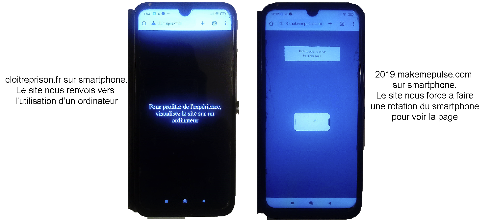

Le numérique englobe une multitude de supports — PC, smartphones, tablettes — chacun avec des formats, des capacités techniques, des systèmes d'exploitation, des configurations colorimétriques et des qualités audio distinctes. Cette diversité impose une flexibilité en termes de conception et de développement. Chaque plateforme possède ses propres spécificités techniques et ergonomiques, influençant la manière dont le contenu est perçu et interactive.
Cette diversité oblige les concepteurs à adopter une approche adaptative, en utilisant des technologies telles que le responsive design pour garantir une expérience cohérente et optimale sur tous les types de dispositifs. Même si l'on souhaite cibler uniquement un seul support pour des raisons techniques ou autres, il est essentiel de prendre en compte la notion de polymatérialité des supports. Par exemple, le site http://cloitreprison.fr/ n'est pas accessible sur smartphone et affiche donc un message invitant les utilisateurs à se connecter depuis un ordinateur lorsqu'ils tentent d'y accéder via un smartphone.

Contexte d'Utilisation
Le contexte dans lequel l'utilisateur accède au web interactif joue un rôle crucial. Que ce soit installé dans un canapé, dans le tumulte du métro ou concentré au bureau, les attitudes et les gestuelles adoptées diffèrent, impactant la réception des informations. Par exemple, une interface conçue pour une utilisation en déplacement doit être rapide, réactive et facile à naviguer d'une seule main.
Il est essentiel de cibler son public, car on n'interagit pas de la même manière avec un enfant qu'avec une personne âgée. Il est également important de prendre en compte les personnes aveugles, malvoyantes ou sourdes afin qu'elles puissent elles aussi accéder pleinement à l'immersion.
Temps de Chargement :
Les temps de chargement peuvent varier en fonction de la connexion internet et des performances de l'appareil. Des temps de chargement longs peuvent frustrer l'utilisateur et nuire à l'engagement, d'où l'importance d'optimiser les ressources et les performances du site.
Pour afficher l'image, restez appuyé sur la touche MAJ jusqu'à la fin du téléchargement.
Interaction avec la souris
Mouvement
Description : Utilisation des coordonnées X et Y de la souris pour déclencher des événements.
Cas Général d'Utilisation : Suivi du curseur, détection de position pour des animations interactives.
Compatibilité avec Smartphone : Sur les appareils tactiles, les mouvements de la souris sont remplacés par des gestes de glissement, liés aux clics tactiles.
Survol
Description : Déclenchement d'actions lorsque le curseur survole un élément sans cliquer.
Cas Général d'Utilisation : Affichage de menus déroulants, infobulles informatives, effets visuels.
Compatibilité avec Smartphone : Non applicable directement, souvent simulé par un premier clic pour afficher les options.
Clic Simple (Droit ou Gauche)
Description : Activation ou sélection d'éléments par un seul clic.
Cas Général d'Utilisation : Ouverture de liens, activation de boutons, sélection d'éléments.
Compatibilité avec Smartphone : Remplacé par des tapotements tactiles.
Double Clic
Description : Activation rapide d'une action par deux clics successifs.
Cas Général d'Utilisation : Ouverture de fichiers ou dossiers, lancement d'applications spécifiques.
Compatibilité avec Smartphone : Rarement utilisé, remplacé par des tapotements rapides ou autres gestes.
Maintien du Clic
Description : Maintenir le bouton de la souris enfoncé pour effectuer des actions continues ou des sélections multiples.
Cas Général d'Utilisation : Sélection de zones sur une carte, création de sélections multiples dans des listes.
Compatibilité avec Smartphone : Simulé par des appuis longs (long press).
Glisser-Déposer
Description : Déplacer des éléments d'une zone à une autre en les faisant glisser avec la souris.
Cas Général d'Utilisation : Organisation de contenu, upload de fichiers, interactions dans les jeux.
Compatibilité avec Smartphone : Supporté par les gestes de glisser-déposer tactiles.
Molette de Défilement
Description : Utilisation de la molette de la souris pour faire défiler le contenu verticalement ou horizontalement.
Cas Général d'Utilisation : Navigation sur des pages longues, zoom avant/arrière sur des images.
Compatibilité avec Smartphone : Remplacée par le défilement tactile par glissement.
Clic Molette
Description : Utilisation de la molette de la souris comme un bouton supplémentaire pour des actions spécifiques.
Cas Général d'Utilisation : Ouverture de liens dans de nouveaux onglets, activation de modes spéciaux.
Compatibilité avec Smartphone : Généralement non supporté, certaines actions peuvent être mappées à des gestes spécifiques.
Interaction avec le clavier
Saisie clavier
Description : Chaque touche possède un numéro d'identification unique. Ces numéros peuvent être utilisés pour positionner des formes dans l'espace.
Cas Général d'Utilisation : Remplissage de formulaires, recherche sur le site.
Compatibilité avec Smartphone : Remplacée par le clavier virtuel tactile.
Multimédia
Le web interactif permet d'intégrer différents contenus multimédias. Parmi ceux-ci, on retrouve les images, les vidéos, le son, les éléments 3D, les documents, les animations, les infographies et graphiques interactifs, ainsi que les PDF et documents téléchargeables.
La Video
Exemple d'un puzzle vidéo, utiliser le glisser-déposer pour déplacer les morceaux du puzzle.
(désolé ça prend un peu de temps a charger et demarrer...)
Le Son
@arialabel. Two grey circles on a light grey background that move as the user moves their mouse and plays different noises based on their distance from each other.
Objet 3D
Exemple d'objet 3D dont la rotation dépend du mouvement de la souris.
Autre exemple avec mouvement de la souris, mouvement de la molette et entrée texte
Exemples de Sites Interactifs
Voici quelques exemples qui illustrent les différentes facettes de l’interactivité sur le web, en mettant en lumière leurs aspects, avantages, inconvénients et les enjeux qu’ils abordent.
Description : Cloître Prison est un webdocumentaire et une production scientifique collective, fruit de quatre ans de recherches par une équipe d’historiens, dans le cadre du projet « Enfermements ».
Aspects :
Navigation principalement destinée aux ordinateurs de bureau avec une interface optimisée pour une expérience immersive.
Utilisation d’animations et de graphiques pour simuler l’environnement carcéral.
Contenus informatifs et narratifs intégrés dans l’expérience de navigation.
Interactions limitées aux dispositifs de pointage (souris), sans prise en charge avancée des interactions tactiles.
Avantages :
Expérience utilisateur immersive et engageante.
Capacité à transmettre des émotions et des messages de manière efficace.
Design esthétique et professionnel.
Inconvénients :
Peut être exigeant en termes de performances, nécessitant des appareils puissants.
Accessibilité limitée pour les utilisateurs malvoyants ou utilisant des technologies d’assistance.
Enjeu Interactif : Utiliser la technologie interactive pour sensibiliser et éduquer le public sur des sujets sociaux complexes en offrant une expérience immersive qui favorise l’empathie et la compréhension.
Description : Make Me Pulse 2019 réalise Nomadic Tribe, un conte interactif où l’animation est mise en avant.
Aspects :
Interface utilisateur dynamique avec animations interactives.
Intégration de contenu multimédia (audio, vidéo).
Personnalisation de l’expérience utilisateur en fonction des interactions.
Avantages :
Engagement élevé des utilisateurs grâce à l’interactivité.
Design moderne et attractif.
Inconvénients :
Complexité de développement et maintenance élevée.
Peut présenter des problèmes de compatibilité sur certains navigateurs ou appareils mobiles.
Enjeu Interactif : Créer une plateforme interactive qui engage activement les utilisateurs dans le processus de découverte visuel et musicale, rendant l’expérience plus personnelle et mémorable.
Nulo par Dannniel (Dribbble)
Description : Ce site interactif créé par Dannniel pour Nulo, une marque de nourriture pour chats, présente un chat animé qui suit la gamelle de croquettes guidé par les mouvements de la souris de l’utilisateur.
Aspects :
Animation en temps réel réagissant aux mouvements de la souris.
Design ludique et engageant adapté à la cible (amoureux des chats).
Utilisation de la 3D et des technologies de suivi de la souris pour une interaction fluide.
Avantages :
Haute interactivité qui capte l’attention des utilisateurs.
Expérience utilisateur amusante et mémorable.
Renforcement de l’identité de marque à travers une animation personnalisée.
Inconvénients :
Peut ralentir le chargement du site si mal optimisé.
Accessibilité limitée pour les utilisateurs ne pouvant pas utiliser la souris.
Enjeu Interactif : Utiliser des animations réactives pour créer une connexion émotionnelle avec les utilisateurs et renforcer l’engagement envers la marque de manière ludique et innovante, uniquement avec le mouvement de la souris.
Description : "Leonardo: Inside a Genius Mind" est une expérience interactive créée par Google qui plonge les utilisateurs dans l'univers de Léonard de Vinci. Ce site explore les différentes facettes de son génie à travers des contenus multimédias, des visualisations 3D de ses inventions, et des récits interactifs de ses œuvres artistiques et scientifiques.
Aspects :
Exploration interactive des inventions et des œuvres d'art de Léonard de Vinci en 3D.
Intégration de vidéos explicatives et de récits audio pour une immersion complète.
Utilisation de la réalité augmentée (AR) pour visualiser les croquis et les modèles de Léonard dans un environnement réel.
Navigation intuitive avec des menus clairs et des points d'interaction facilement identifiables.
Avantages :
Expérience utilisateur immersive qui permet une compréhension approfondie du génie de Léonard de Vinci.
Utilisation efficace des technologies modernes comme la 3D et la réalité augmentée pour enrichir le contenu éducatif.
Design visuellement attrayant et professionnel qui capte l'attention des utilisateurs.
Accessibilité améliorée grâce à des contenus multimédias variés (texte, audio, vidéo, interactif).
Inconvénients :
Peut être exigeant en termes de performances, nécessitant des appareils avec de bonnes capacités graphiques.
Complexité de navigation pour les utilisateurs moins familiers avec les interfaces interactives avancées.
Compatibilité limitée avec certains navigateurs plus anciens ou appareils mobiles moins puissants.
Enjeu Interactif : Utiliser des technologies interactives avancées pour offrir une expérience éducative et immersive qui met en lumière le génie multidisciplinaire de Léonard de Vinci. L'objectif est de rendre l'apprentissage plus engageant et accessible, tout en démontrant l'importance de l'innovation et de la créativité dans les domaines artistiques et scientifiques.
TRAVAUX PERSONNEL
Travaux d'étude sur le web interactif développés ces dernières années.
Site de test réalisé pour une troupe de théâtre de marionnettes, destiné à promouvoir leur spectacle "Le Voyage de Samar". Ce projet illustre parfaitement ce qu'il faut absolument éviter : l'intégration excessive de modules interactifs sans ligne directrice ou narratif clair. Cette approche rend les interactions très "gadgets", un peu kitsch et superflues, ce qui nuit à l'expérience utilisateur.
Travail en cours visant à créer un site servant de pont entre un objet mis en condition muséale et le spectateur. L'objectif est de redonner usage et valeur pédagogique à l'objet en réfléchissant à la manière dont le numérique et l'interaction peuvent transmettre des connaissances tout en utilisant les savoirs et le matériel du 19ème siècle.
Site réalisé pour présenter un Fan Game Pokemon. Ce projet explore l'intersection entre le jeux video et la narration et le web, en utilisant des éléments inspirés de l'univers Nintendo pour créer une expérience immersive.